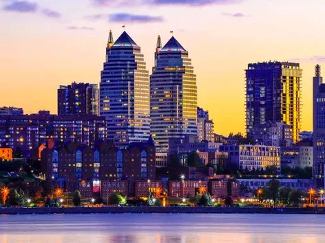
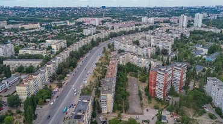

Dnipro is a city of contrasts, where no one will be surprised to see an old architectural monument next to a brand new skyscraper. However, we are sure that even the locals do not know all the secrets that Dnipro's history. We invite you to learn more about this unique place with us.


Interesting and unusual facts about Dnipro
Why do historians call Dnipro a city without a foundation date?
According to various estimates, in 2023 the Dnipro will be 237 to 1153 years old. It is also interesting that there is no specific date for the celebration of the City Day traditionally, it is celebrated on the second Sunday of September.
This unusual fact is related to the fact that Dnipro was founded at least 7 times, in particular, we are talking about the founding of settlements on the territory of the modern city:
- The first mention of the foundation of a monastery on Monastery Island by Byzantine monks dates back to 870 year.
- In 1635, the Kodak Fortress (Old Kodak) was founded.
- In 1660, the settlement of Novi Kodaki (Kaidaki) was founded.
- The foundation of the Polovytsia settlement, on which Katerynoslav was later located, was founded in 1743.
- The first official date of foundation of Katerynoslav-I is 1776.
- In 1784, a decree was passed on the founding of Katerynoslav on a new site.
- 1787 is the date of foundation of Katerynoslav II.
- In July 1926, Katerynoslav was renamed Dnipropetrovs'k.
- And in 2016, as part of the decommunization process, the Verkhovna Rada of Ukraine renamed Dnipropetrovs'k to Dnipro.
The second Chinese wall
The building, located at 12 Heroiv Avenue, was given a specific name by the local population - the "Chinese Wall". This is due to the fact that the building is over 800 meters long and stretches as far as three trolleybus stops. This 9-storey building has 36 entrances and over 1200 apartments.
The Dnipro Chinese Wall has been competing with the Lutsk Beehive House for the title of the world's longest building for years.
The smallest subway in Europe
The Dnipro Metro is jokingly called the "paid demo of the subway" because it is the shortest underground in Europe. The total length of the underground line is only 7.8 kilometers and has 6 stations.
A street that has never changed its name
Philosophical Street in Dnipro has retained its original name for almost 200 years. And its name once caused a lot of jokes among the local population. The fact is that during the years of construction of this place, Philosophical Street, like most of the city's streets, was not well-maintained, and therefore it was almost impossible to walk along it during heavy rains. Thus, residents came to the conclusion that the street got its name because people had to philosophize before walking along it in bad weather and take this desperate step.
In addition, the street was considered "Jewish" because it was home to the largest number of synagogues, the 3rd branch of the Talmud Torah, an orphanage, and a Jewish hospital.
Як правильно обрати ліжко?
При виборі ліжка в інтернет магазині Вам в першу чергу потрібно вибрати матеріал. Найбільшою популярністю користуються дерев'яні ліжка, виготовлені з вільхи, ясена чи дуба. Такі моделі чудово прикрасять Вашу спальню у квартирі чи приватному будинку. Для орендованих квартир, під здачу, більше підійде ліжко з металу, так як воно просто «не вбивається», а також має дуже демократичну ціну.
Для Вашої зручності ліжко може комплектуватись висувними ящиками або підйомним механізмом. Ящики можуть бути з одного боку ліжка або з двох. Також є моделі, з висувними ящиками спереду. Ліжка з підйомним механізмом, це відмінне рішення, для невеликих кімнат, вони дозволяють заощадити простір і мають велику нішу для зберігання постільної білизни. Всі дерев'яні ліжка комплектуються буковими ламелями. Спальне місце з ламельною основою може витримувати навантаження до 150 кг на одне спальне місце. Відстань між ламелями, у своїй має бути 2,5-3 див.
Кожне ліжко може бути забарвлене у різні кольори: чорні, білі, сірі, венге, у кольорі горіх. Завдяки цьому ліжко можна підібрати під будь-який інтер'єр.
Оформлення вітальні. Які м'які меблі краще вибрати?
Вітальня – це основна кімната у кожному будинку. Саме вона служить для прийому гостей, проведення часу всією сім'єю та просто для відпочинку у приємній теплій атмосфері. Оформляючи свій будинок та вітальню зокрема, всі намагаються зробити її максимально зручною, комфортною та красивою. Основним та центральним елементом оформлення вітальні, як і будь-якої іншої кімнати, є м'які меблі.
Будь-які меблі для вітальні повинні бути не тільки стильними і красивими, але і функціональними. На таких меблів має бути зручно та приємно відпочивати та приймати гостей. Однак сьогодні існує величезна різноманітність найрізноманітніших м'яких меблів для вітальні, яка підходить для кімнат різних розмірів і форм. На чому варто зупинити свій вибір? Як краще оформити свою вітальню, щоб вам було комфортно, а гості хотіли приходити до вас знову та знову?
На сайті інтернет магазину Кровато представлено велику різноманітність м'яких меблів для вітальні, серед яких кожен зможе вибрати для себе найбільш вдалий варіант. У нас ви знайдете:
-
Прямі дивани. Такі дивани вважаються класикою. Вони підходять для віталень будь-яких форм та розмірів. Прямий диван виглядає стильно та лаконічно, на ньому зручно відпочивати, приймати гостей або навіть спати. Прямі дивани можуть стояти біля стіни, так і в центрі кімнати. Багато моделей прямих диванів легко розкладаються, перетворюючись на повноцінне спальне місце. Також більшість диванів мають великі та місткі ніші, які є додатковим місцем для зберігання;
-
Кутові дивани Кутові дивани вважаються найзручнішими та комфортнішими. Вони ідеально підійдуть для приємного проведення часу в колі сім'ї або друзів. Кутові дивани в основному використовуються для оформлення великих віталень, так як вони займають багато місця, і для кімнат з невеликою площею просто не підійдуть;
-
Тахти. Тахта - це одна з варіацій дивана, але стильніша і мінімалістична. Виглядають тахти дуже незвично і можуть підійти для будь-якого інтер'єру. Також тахти більше ніж звичайні дивани підходять для сну, оскільки в їх основі не пружинні блоки, а дерев'яні ламелі або ортопедичні матраци;
-
Крісла. Крісло – це особливий предмет інтер'єру. Сучасні дизайнери не часто використовують його, вважаючи застарілим, проте саме крісла створюють особливий затишок та комфорт у будь-якій кімнаті. Сьогодні існує величезна різноманітність класичних та сучасних моделей крісел, що дозволяє кожному відшукати ідеальне крісло для свого будинку;
-
Набір меблів. Комплект м'яких меблів – це відмінне рішення для тих, хто хоче меблювати свою вітальню не лише диваном, а й кріслами. Існують набори з одним або двома кріслами, із прямими або кутовими диванами. Основна перевага будь-якого готового меблевого гарнітура – це те, що предмети меблів у ньому ідеально поєднуються один з одним, і вам не потрібно буде витрачати свій час та сили на їхній підбір.
Підбір м'яких меблів для вітальні – це заняття непросте. Однак при виборі та покупці меблів для своєї вітальні пам'ятайте, що якісні м'які меблі повинні бути не тільки красивими, але й зручними для вас і всіх мешканців вашого будинку.